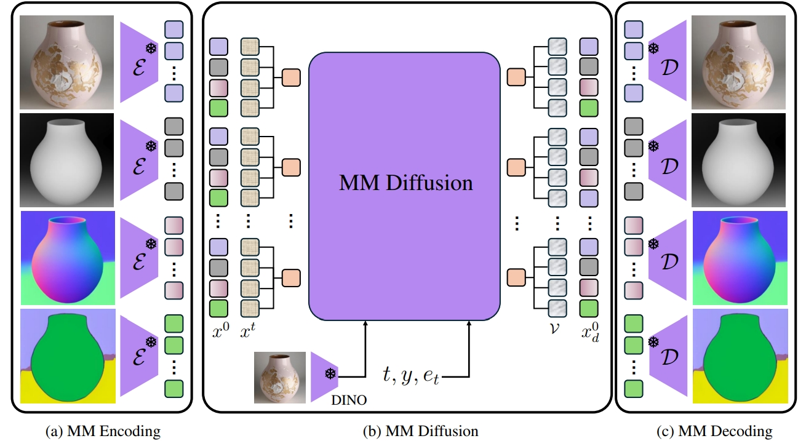

A unified diffusion framework for multi-modal generation and understanding has the transformative potential to achieve seamless and controllable image diffusion and other cross-modal tasks. In this paper, we introduce MMGen, a unified framework that integrates multiple generative tasks into a single diffusion model. This includes: (1) multi-modal category-conditioned generation, where multi-modal outputs are generated simultaneously through a single inference process, given category information; (2) multi-modal visual understanding, which accurately predicts depth, surface normals, and segmentation maps from RGB images; and (3) multi-modal conditioned generation, which produces corresponding RGB images based on specific modality conditions and other aligned modalities. Our approach develops a novel diffusion transformer that flexibly supports multi-modal output, along with a simple modality-decoupling strategy to unify various tasks. Extensive experiments and applications demonstrate the effectiveness and superiority of MMGen across diverse tasks and conditions, highlighting its potential for applications that require simultaneous generation and understanding.
(1) MM Encoding: Given paired multi-modal images, we first use a shared pretrained VAE encoder to encode each modality into latent patch codes. (2) MM Diffusion: Patch codes corresponding to the same image location are grouped to form the multi-modal patch input x0 , which is blended with random noise to create the diffusion input xt. Conditioned on timestep y, category label t and task embedding et, the MM Diffusion model iteratively predicts the velocity, resulting in denoised multi-modal patches x0_d. (3) MM Decoding: Finally, these patches are reprojected to the original image locations for each modality and decoded back into image pixels using a shared pretrained VAE decoder
@article{jiepeng2025mmgen,
author = {Wang, Jiepeng and Wang, Zhaoqing and Pan, Hao and Liu, Yuan and Yu, Dongdong and Wang, Changhu and Wang, Wenping},
title = {MMGen: Unified Multi-modal Image Generation and Understanding in One Go},
journal = {arXiv preprint arXiv:2503.20644},
year = {2025},
}